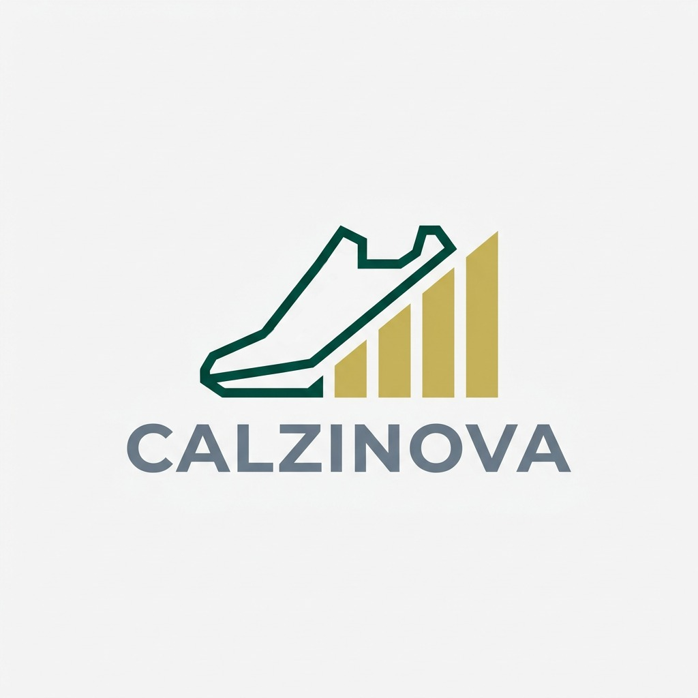
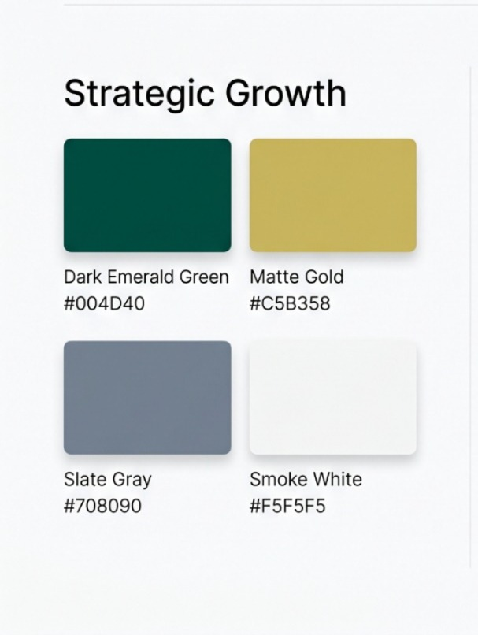
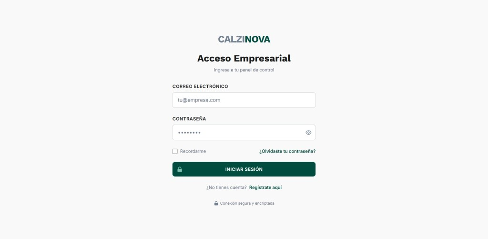
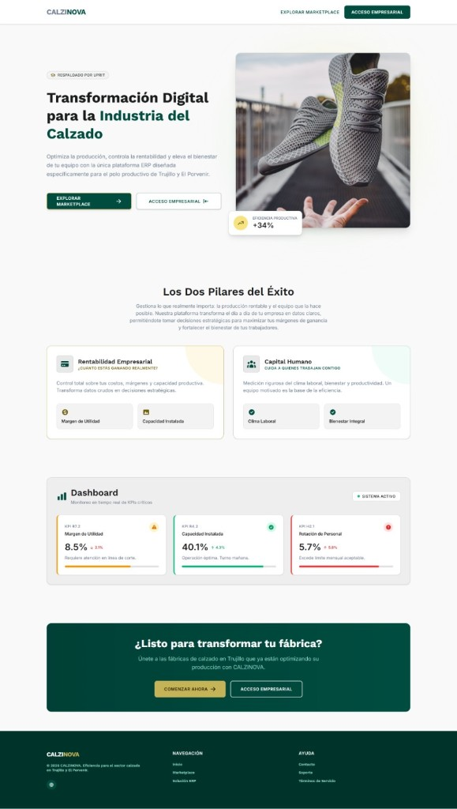
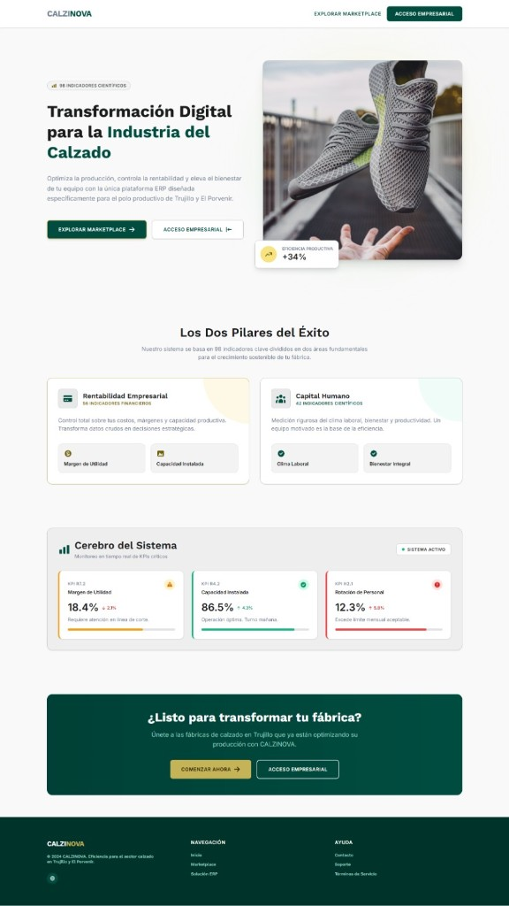
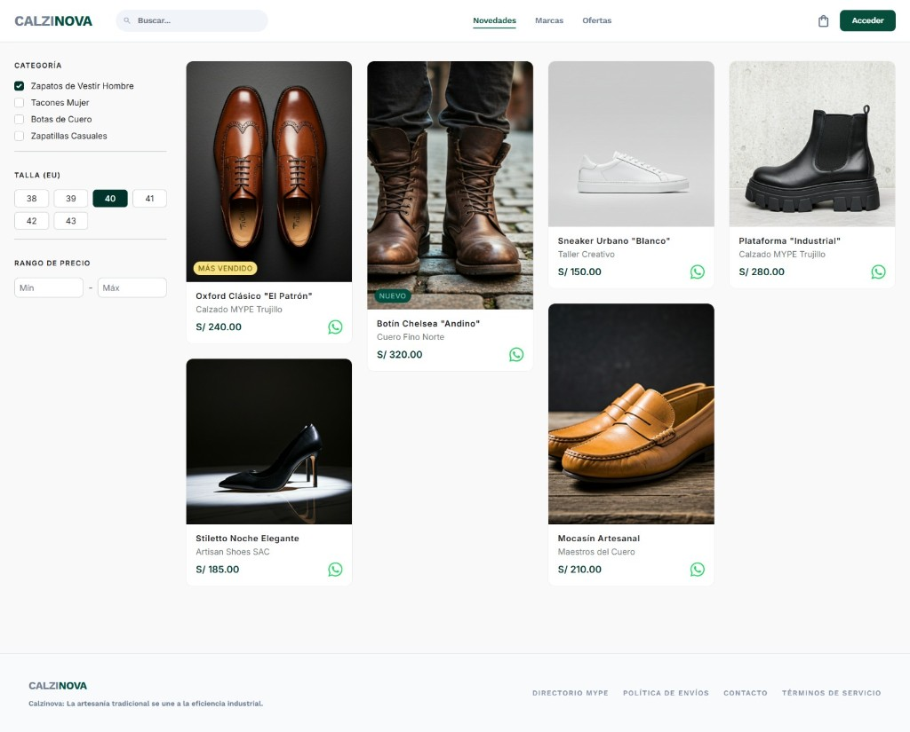
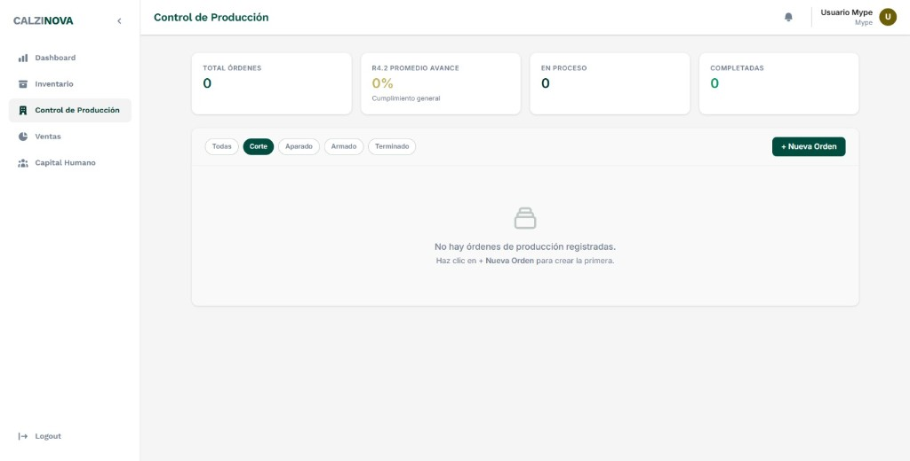
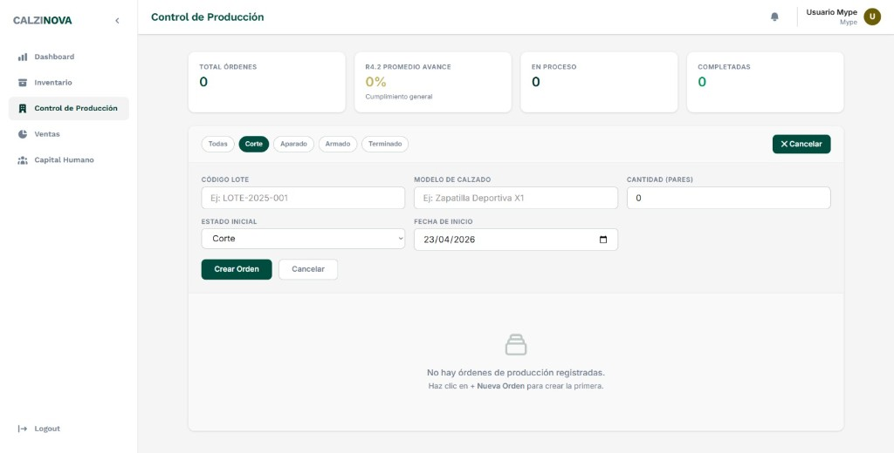

Ingeniería de software
Marketplace y panel de gestión de indicadores comerciales
Propuesta técnica (Calzado Libertad) + manual de usuario
Luigi Armando Robles Palacios · Jhayron Joseph Quiliche Valladolid
Trujillo, La Libertad — 2026
Branding

Calzado e indicadores de crecimiento: artesanía e industrial digital en un solo relato.
Guion para exponer y formar: propuesta, datos, seguridad, uso de la interfaz.
Hosting, SSL y dominio forman el entorno seguro. Los montos se revisan con el proveedor al desplegar; aquí se omite el desglose presupuestal a petición del equipo.
Utilidad aprox. (%): ((Venta − Costo) / Venta) × 100
Punto de equilibrio: Gastos / (Precio − costo variable)
admin.calzadolibertad.pe/dashboard — ventas, utilidad, stock bajo, gráfica ventas vs costos.calzadolibertad.pe — catálogo y WhatsApp por producto, responsive móvil.
#004D40 · #C5B358 · #708090 · #F5F5F5 — botones, fondos y acentos.
| Campo | Uso | Indicador UPRIT |
|---|---|---|
| Material | Insumo: cuero, suela, hilo, pegamento… | Control de insumos |
| Unidad de medida | Pies, docenas, litros… | Gestión de compras |
| Stock actual | Disponible hoy en almacén | R4.6 abastecimiento |
| Stock mínimo | Umbral de alerta | Alerta de quiebre |
| Costo unitario | Precio de compra | R1.7 valorización |
| Valor total | Stock × costo (capital inmovilizado) | R1.7 capital de trabajo |
| Campo | Uso | Indicador UPRIT |
|---|---|---|
| Código de lote | ID del batch / pedido | Trazabilidad |
| Modelo | Diseño o referencia | Catálogo |
| Cant. programada / ejecutada | Pares pedidos / terminados | Meta, R4.2 eficiencia |
| Estado | Corte → Aparado → Armado → Terminado | R4.4 lead time |
| Fecha entrega | Compromiso con cliente | R4.1 cumplimiento |
| Campo | Uso | Indicador UPRIT |
|---|---|---|
| Cliente | Comprador | Cartera |
| Total venta | Monto cobrado | Ingresos brutos |
| Método de pago | Efectivo, Yape, Plin, transfer. | R1.1 bancarización |
| Estado de pago | Pagado / pendiente | Control de deuda |
| Ticket promedio | Gasto medio mensual | R3.3 |
| Campo | Uso | Indicador UPRIT |
|---|---|---|
| Operario | Nombre | Registro de personal |
| Especialidad | Cortador, aparador… | Especialización |
| Horas capacitación | Formación | H2.1 capacitación |
| Incidentes | Riesgos/accidentes | H5.7 seguridad |
Cada taller (MYPE) solo ve sus propios datos. No se mezclan fábricas. Auditoría básica: quién hizo qué, con qué correo y rol.
| Campo | Para el usuario | Negocio |
|---|---|---|
| Name | Nombre visible | Auditoría |
| Acceso e ID único | Login y notificaciones | |
| Role | Permisos | Qué ve y hace |
| Password | Cifrada | Nadie ve la clave; solo rotación/reset |
| Rol | Alcance |
|---|---|
| Admin (soporte) | Plataforma, nuevas MYPEs, servidor |
| MYPE (dueño) | Todo su negocio; no ve otros talleres |
| Cliente | Favoritos / carrito; sin datos ajenos |




Búsqueda, categoría, talla EU, rango de precio; S/ e ícono WhatsApp en cada ficha.


CALZINOVA — Propuesta técnica y manual con todas las capturas de interfaz.
← → o botones · F para pantalla completa
Flechas del teclado · Inicio / Fin · Pulsar F para pantalla completa en el navegador